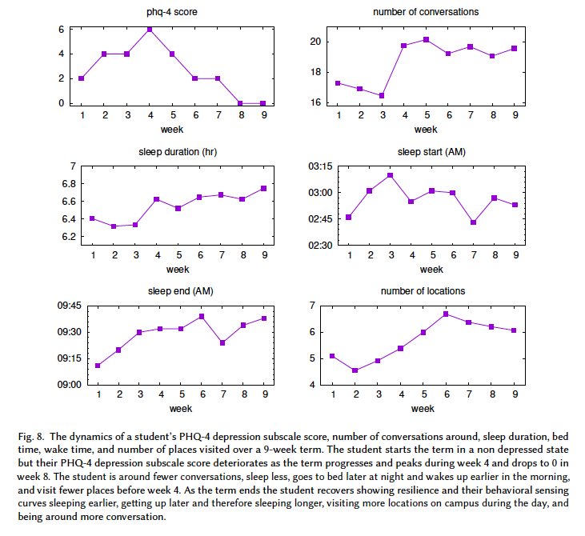
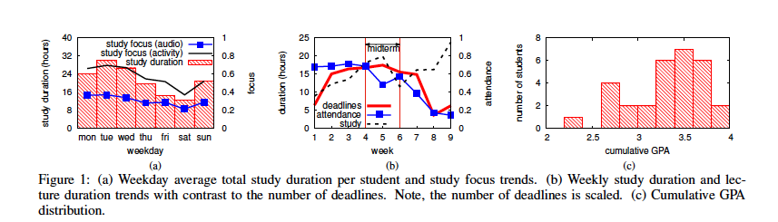

3 Week 3. Lean UX Design Process
https://www.youtube.com/watch?v=7NkMm5WefBA
Lean Concept Diagram
린 UX는 어떤 지표(KPI: Key Performance Indicator)가 비즈니스를 이끄는지 알아내고, 이러한 지표를 개선하기 위해 해결해야할 고객의 문제가 무엇인지 이해하고(Hypothesis), 고객의 어려움을 개선하는 데 필요한 아이디어를 도출한 다음(MVP: Minimum Viable Product), 그게 적합한 아이디어인지 검증(A/B testing)하는 것이다.

- 린 UX는 가설 검증이다
- 린 UX는 사용자 중심적이다.
- 린 UX는 애자일이다.
- 린 UX는 데이터에 기반한다.
- 린 UX는 빠르고 저렴하다. (때에 따라서)
- 린 UX는 반복적이다. (언제나)
해설 추가 예정
Project Target Data
데이터 이해하는 법
- 변수의 이해 (데이터 형: 정수, 실수, 문자, 범주, 논리 값 등 이해)
- 변수의 시각화, 변수 간 시각화
- 변수 별 값의 이해 (대표값과 추세값, 값의 변동)
- 변수간 관계의 이해 (인과 관계, 상관 관계)
- 데이터가 영향을 미치는 요소의 이해 (가설, 모델 설정)
프로젝트 주제 : (Student Life study 등 )의 공개 데이터와 분석 자료를 활용하여
(타겟 서비스)를 업데이트, 리디자인하고, Lean 방법론(Build-Measure-Learn)을 이용하여 검증한다.
우울증 관련 데이터 분석

학점 관련 데이터 분석



코로나 생활 변화 데이터 분석


Student Life Project의 데이터 분석 자료들 (그래프의 원본 논문 참조)
각 데이터에 대한 해설 추가 예정
2주 과제 리뷰>
- 콘텐츠/ 서비스 내용을 분석하여 데이터 인사이트를 낼 수 있는 데이터가 존재해야함. (있다고 가정하면 안됨)
- 콘텐츠나 서비스의 내용은 아주 구체적이어야함. 미루어 짐작할 수 있는 내용, 사용자와 직접 관련 없는 내용은 안됨
- 생각하는 서비스의 내용에 대하여 기존에 출시되어 있는 서비스(A안)가 존재해야함. A서비스와 B서비스를 합쳐서 기존에 없던 C서비스를 만드는 프로젝트는 안됨 (A/B 테스트 불가, 서비스 내용이 다르면 비교할 수 없음)
- 서비스의 내용이나 의견에 대하여 설문으로 사용자 피드백을 얻는 것이 가능해야함. 설문이 안되면 인터렉티브 프로토타입을 제작해야함. 사용자 의견을 내기 위하여 경험 시간이 많이 필요한 서비스는 지양
- 어떻게 테스트 할 것인가에 대한 고려가 필요함. 외국인 대상의 서비스면 외국인 대상으로 테스트, 아동 대상의 서비스면 아동 대상으로 테스트 해야함.
- 사회 정책을 개발하거나 홍보하는 과제가 아니라 개인의 사용자 경험을 개선하는 과제여야함.
- 관심 데이터의 내용을 반영할 수 있는 사용자 경험(인지, 의사결정, 행위)가 무엇인가를 중심으로 주제 가능성을 확인 (학습 경험은 평가 어려움, 학습 시간, 러닝 커브 필요)
다음주 준비> 3주: 과제 정의 (9월 28일은 추석 연휴 휴강)
프로젝트의 배경 데이터 서술 (출처와 내용)
Project statement(사용자, 사용상황, 서비스의 내용 및 가치 포함)
유사 서비스 현황 조사 (3개 이상의 유사 서비스를 조사하고, 그 중 리디자인 수행할 Target service선정)
디자인 리서치에 필요한 데이터를 수집하고 그 데이터로 알 수 있는 내용 서술 (Data Curation)
데이터셋 찾아보기 (해설 메뉴얼 추가 )
- 검색어 동향 보기 (해설 메뉴얼 추가 )